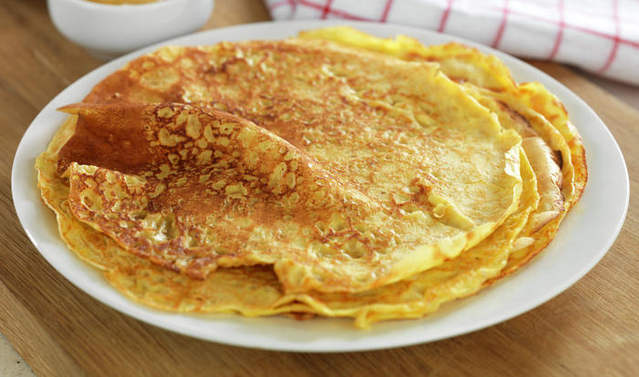

Norwegian Pancakes (8 pancakes)

Description
These thin pancakes are similar to crépe, and are considered traditional Norwegian
pancakes.
Ingredients
- 3 dL flour
- 0.5 ts salt
- 5 dL milk
- 4 eggs
Steps
- Mix the flour and the salt together in a bowl
- Wisk in half the milk until it is a smooth batter
- Add the rest of the milk slowly while wisking the batter
- Add the eggs
- Let the batter rest for 30 minutes
- Pour a scoop of the batter into a buttered pan
- Lift the pan so the batter is covering the whole pan surface